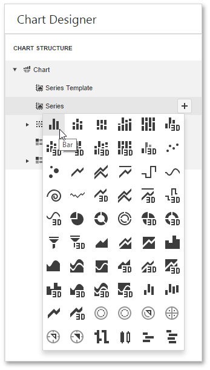
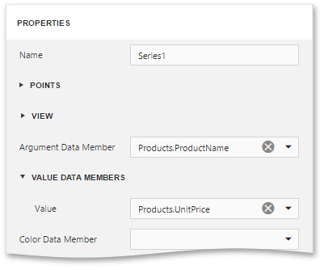
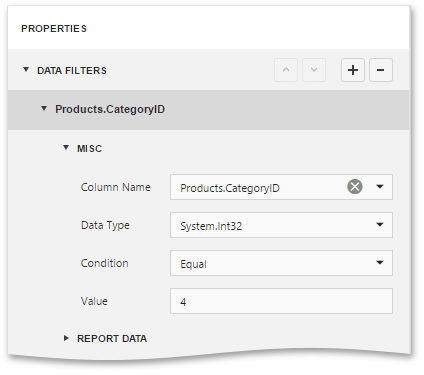
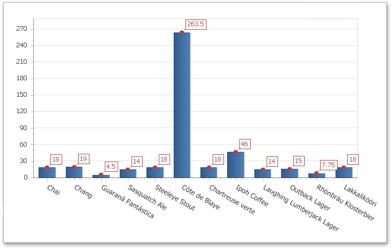

Chart with Static Series
This document describes how to create a report with a Chart control that displays products and their prices for a selected category. In this example, series data has a single data source, but you can use different data sources for different series if required.
To adjust a Chart by manually creating its series, do the following:
- Create a new report and bind it to a data source.
Drop the Chart control from the Toolbox onto the report's Detail band.

To bind the Chart to a data source, in the Properties Panel, expand the Data category and specify the Data Source property.

Note
Set the report's Data Source property to None after placing the Chart in the Detail band. Otherwise, the Chart repeats at the preview as many times as there are records in the data source.

Select the Chart control once again and click the Run Designer button displayed over it.

In the invoked Chart Designer, add a new series to the Chart control. To do this, locate the Series element in the Chart Structure tree and click the plus button. In the invoked list of series types, select the required type (for example, Bar).

To populate the created series with points, select it in the tree and switch Properties panel at the right of the Designer's window. Assign the required data fields to the Argument Data Member and Value Data Members properties to define coordinates for series points.

To filter series data, expand the Data Filters category, create and adjust filtering criteria as demonstrated below.

- Create one more series with the same settings, but this time, select the Point view type.
To improve your Chart's appearance, you can make the following adjustments:
- Remove the Chart's legend as it shows the same data for both series by selecting the Lagend item in the Chart Structure and setting its Visibility property to False.
- The point labels for Series1 are unnecessary, so set the Labels Visibility property to False.
Rotate the X-axis labels for better readability. To do this, select the Primary Axis X node in the tree and adjust properties for its labels (using the Label property). For instance, set the Angle property to 20 and the Enable Antialiasing property to True.
It is also possible to customize other Chart properties.
The chart is now ready. Switch your report to the Preview mode and view the result.
